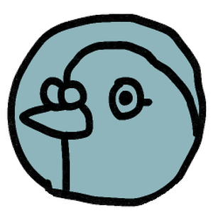
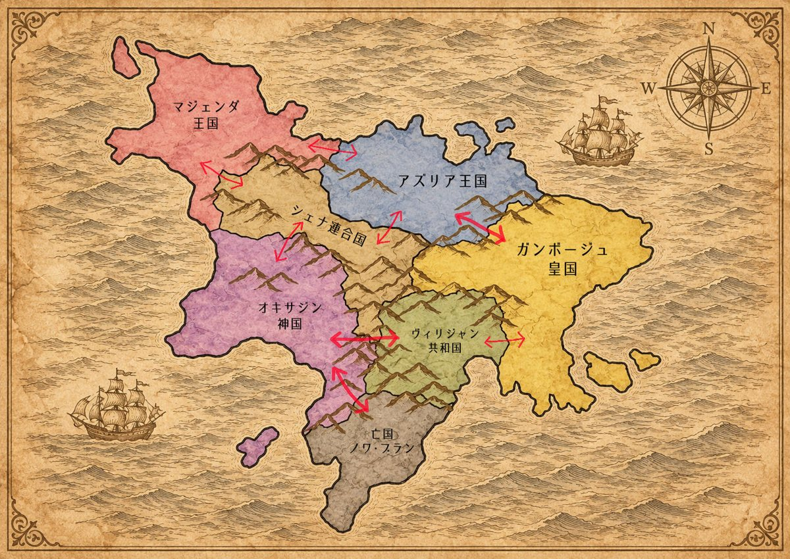

バックナンバー
「次の日へ」を押すと、読み終えた手紙がここに新しい順で並びます。
冒険者の個人ステータス
能力値は0〜100。判定は「1d100が成功率以下なら成功」で、成功率は能力値に装備・仲間などの補正を足して決まります。判定に成功するたび、その能力が少しずつ伸びることがあります（高いほど伸びにくい）。青い数字は装備と同行冒険者による補正です。
装備
同行冒険者
相棒の鳩
都市の道具屋で買える「鳩のおやつ」をあげられます。

キャラメイク
名前・性別・口調・一人称・性格・鳩の設定は、変えるとすぐ反映されます。種族・職業・初期パラメータは「この冒険者で第1号から始める」を押すと反映され、冒険が最初からになります（このブラウザに保存している冒険は上書きされます）。冒険は毎日、自動でこのブラウザに保存されます。
現在地と移動先
移動先を選んでから「次の日へ」を押すと出発し、旅鳩通信タブに新しい手紙が届きます。同じ国の中なら当日に着きます。国境を越えられるのは地図の矢印でつながった隣の国だけで、街道なら1日、山道（アズリア–ガンボージュ、オキサジン–ヴィリジャン、オキサジン–ノワ・ブラン）なら2日かかります。各国のダンジョンのうち奥の2つ（ノワ・ブランは3つ）は、噂を聞くまで地図に出てきません。

冒険者仲間（クロスプレイのテスト）
ほかのプレイヤーの代わりに、テスト用の冒険者が10人、自分で大陸を旅しています。同じ日に同じ場所にいると、一緒に戦って援護し合ったり、倒れかけたときに助けてくれたり、焚き火を囲んだりします。相手の手紙に載るあなたの場面も、旅鳩通信の下で読めます。
持ち物を使う
出発前に使っておけば、その日の冒険はそのぶん元気な状態で始まります。傷薬は都市の道具屋で買えます。
街でできること
都市にいる日は、手紙を読んだあとで買い物や雇用ができます。買ったもの・雇った人は翌日から冒険に加わります。
図鑑とトロフィー
旅で出会った魔物、手に入れた品、訪れた場所が図鑑に載っていきます。まだのものは「？？？」。トロフィーは手紙にも載ります。おかしなトロフィーほど、取るまで条件がわかりません。
トロフィー
魔物図鑑
数字は倒した回数。属性は出会うとわかります。
アイテム図鑑
地名図鑑
噂帳
酒場で聞いた噂が書きとめられていきます。
記録
仲間から聞いた身の上話や、手に入れた手記を読み返せます。
あいことば
デバッグ用。知っている人だけ。
ようこそようこそ！セルレア大陸へ！
この世界は剣と魔法のファンタジー世界だよ！ プレイヤーは冒険者PCを作って一日一回冒険するよ！ 毎日どんな冒険をして帰ってくるか楽しみ！ ネームドNPCとの出会いもあるよ！
たぶんゴールは魔王を倒すこと。でもそれに縛られなくていい。森でキノコを採ったり、おいしいごはんを食べたり、ネームドNPCとキャッキャしても良い。伝説の武器を求めてもいい。名声と好感度を高めて誰かと結婚してもいい。フリーシナリオです！
好感度
出会うたびに＋1、一緒に冒険すると毎日＋1。＋5を超えると、相手の機嫌と魅力判定しだいで世間話・噂話・身の上話が聞けて、手紙に載ります。仲良くなるほど外見の描写が増え、口調も砕けていきます。贈り物は次に会ったときに渡します。
贈り物の予約
判定のしくみ
基本
1d100 ≦ 成功率（基本＋能力値＋補正）
基本の成功率は、やさしい60・ふつう40・むずかしい20・大ボス10。そこに能力値（0〜100）と補正を足し、5〜95％に収めます。01〜05は大成功、96〜00は大失敗。フィールドとダンジョンでは土地の難易度1につき−10％、亡国ノワ・ブランではさらに−20％（ただし別の次元である魔鏡の迷宮では、難易度ヌルゲー・ゆったり・ふつうならかからない）。会話と料理には影響しません。
大技：大ボスは2ラウンド目から、ときどき大技の構えをとります。技巧の判定（基本40）に成功すると完全回避して、すれ違いざまに一撃を返す（ボスの体力−1）。失敗すると、ふつうの反撃の1.5倍のダメージ。
絆の力：黒衣の魔王との戦いでは、好感度50以上の同行ネームドひとりにつき成功率＋10。
判定の種類
戦闘：腕力か魔力の高いほう。失敗でHPが減る。
HPの回復：宿に泊まると＋10、野宿・野営で＋3、おいしいごはんで＋1。傷薬（道具屋で銀貨15）は移動タブからいつでも使えてHP＋3。
交渉・会話：魅力。
探索：知恵。軽業：技巧。
体力は判定に使わず、最大HP（10＋体力÷5）になります。
成長：判定に成功するたび、（100−能力値）×0.3％の確率でその能力が＋1。無職は1.5倍。
休息度
初期15・最大30。毎日−5、戦闘で−2（敗北−3）、探索・軽業で−1。都市の宿（銀貨3×人数）で＋10、野宿・野営で＋2、ごはんで＋1〜3。0以下で疲労（判定−1）、−5以下で重度の疲労（判定−2・毎日HP−5）、−15以下で倒れて同じ国の都市へ撤退。
ダンジョン
入るたびに探索達成度（5〜10）が決まり、出来事の成功で探索度が貯まって、届けば探索成功で報酬。別の場所へ移ると探索度は0に戻ります。探索進度（難易度＋0で50、1上がるごとに＋10、最大100）は滞在1日で−2、探索の成功で−1、移動しても持ち越し。0以下で大ボスが出現し、ボスの体力（3＋難易度）を削りきるか、HPが0か休息度が−15になるまで1ラウンドずつ戦い続けます。負けると探索進度10・休息度0で街へ戻されます。死海の遺跡かマースの魔塔の大ボスを初めて倒すと「魔鏡の鍵」が手に入り、ある場所への道が開かれます。
移動と噂
隣の国にだけ移動でき、街道は1日、山道は2日。各国の奥のダンジョンは、酒場・古書店・冒険者との情報交換・ネームドの噂話で名前を聞くと地図に現れます。ノワ・ブランの都市では、死海の遺跡とマースの魔塔の噂が特に出やすくなっています。PCが斥候か、フェリオスを連れていると、噂が少し出やすくなります。
フィールドと都市
フィールドは一日3回の出来事で、探索の大成功でレアアイテム。都市では武具・食材・名産の購入、顔見知り以上のネームド（銀貨20）と見習い冒険者（銀貨8）の雇用ができます。
おいしいごはん
宿に泊まらない夜は、食材を1個使って料理します（技巧か知恵の高いほうで目標8）。大成功で休息度＋3、成功で＋2、失敗でも＋1。どれでもHP＋1。
成功率の目安（補正なし）
ランダム表
各表は「出目 → 手紙の文 → 効果」の組。紫の札がついた行は判定が起きます。本番ではこの表をJSONにして、毎朝のタスクがスクリプトで振ります。今日出た行は金色になります。